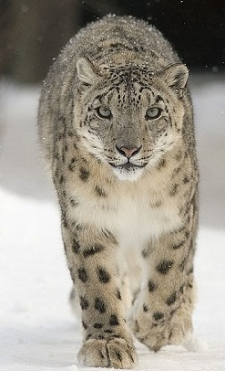

thông tin chi tiết
Báo trắng (còn gọi là Báo Tuyết) (danh pháp hai phần: Panthera uncia) là một loài thuộc họ mèo lớn sống trong các dãy núi ở Nam Á và Trung Á. Cho đến gần đây nhiều nhà phân loại học vẫn đưa báo tuyết vào trong chi Báo cùng với một vài loài thú to lớn họ mèo khác, tuy nhiên chúng không phải là một con báo hoa mai thực thụ mà theo phân loại thì chúng có quan hệ anh em với loài hổ.
Trong mùa hè thông thường chúng sống trên các cành cây ở những khu đồng cỏ ven núi và các khu vực núi đá cho tới tận cao độ 6.000 m. Trong mùa đông, chúng xuống thấp vào các khu rừng ở cao độ tới khoảng 2.000 m. Chúng chủ yếu sống cô độc.
hình ảnh về báo tuyết
-
